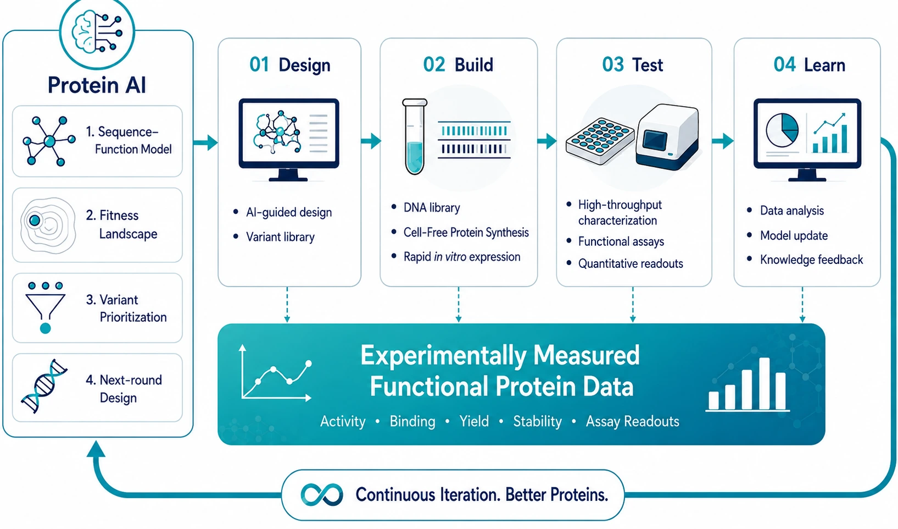

Measured
Experimental results are recorded with the conditions needed to interpret them.
AUTONOMOUS PROTEIN ENGINEERING
ZerothBIO builds experimentally measured functional protein data for protein AI through ProPEL.
Before the First, There’s Zeroth.

WHY ZEROTHBIO
Protein AI can generate more candidates, but development still depends on experimentally measured function. ZerothBIO connects protein design, cell-free production, functional measurement and learning through ProPEL to generate data that can guide the next experiment.
Experimental results are recorded with the conditions needed to interpret them.
The focus is not structure alone, but experimentally observed differences in protein function.
Design, experiment and learning are organized as a repeatable operating loop.
Measured results can become inputs for the next experiment or model-learning step.
PROPEL
ProPEL connects protein design, experimental execution, functional measurement and learning in a closed-loop protein engineering workflow.
‘Autonomous protein engineering’ describes the integrated operating architecture and closed-loop direction; it does not imply guaranteed optimization or zero-human operation.
MEASURED FUNCTIONAL PROTEIN DATA
ZerothBIO’s data narrative starts with experimentally measured protein function and the context required to interpret each result.
TECHNOLOGY
Define candidate hypotheses and search space for experimental evaluation.
Create experimental variant libraries that connect design space to wet-lab testing.
Produce proteins without a cell-culture step as part of the experimental build workflow.
Measure protein outputs under defined conditions and connect results to the next decision.
COMMERCIAL ENTRY
CFPS is ZerothBIO’s commercial entry product for faster protein experimentation.
For Research Use Only. Not for use in diagnostic or therapeutic procedures.
100 rxn
200 rxn
Please reference Cat. No. C1110 or C1120 in your inquiry.
COLLABORATION
Discuss candidate generation, experimental evaluation and iterative protein engineering workflows.
Discuss experiments designed to produce measured protein-function data under defined conditions.
Explore how ProPEL workflows can connect design, experimentation, measurement and learning for a defined project.
ABOUT ZEROTHBIO
ZerothBIO builds experimentally measured functional protein data for protein AI. Through ProPEL, the company connects protein design, experimental execution, functional measurement and learning in an autonomous protein engineering architecture.
CONTACT
Tell us what you are trying to build, measure, or evaluate.
Contact ZerothBIO